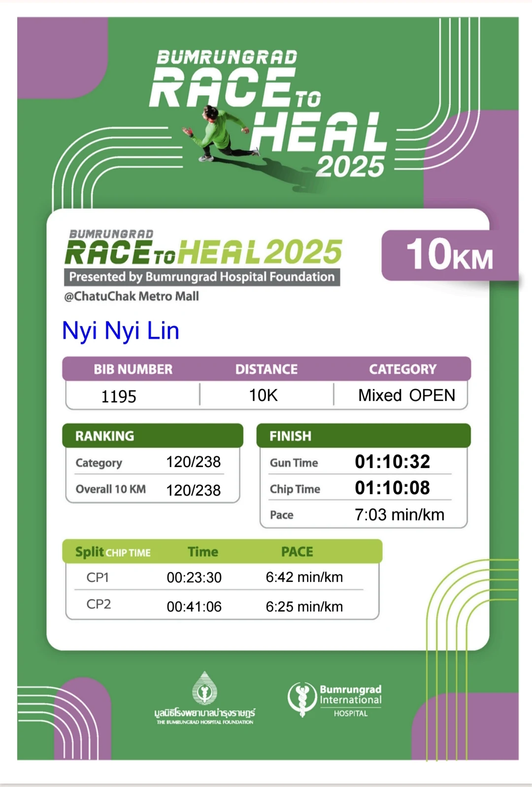
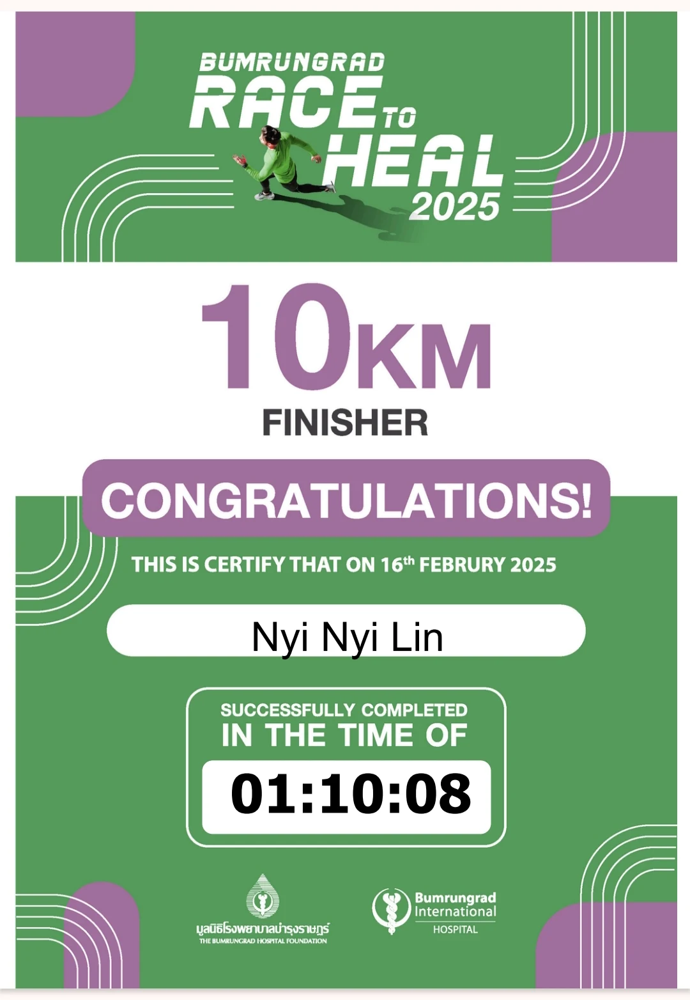
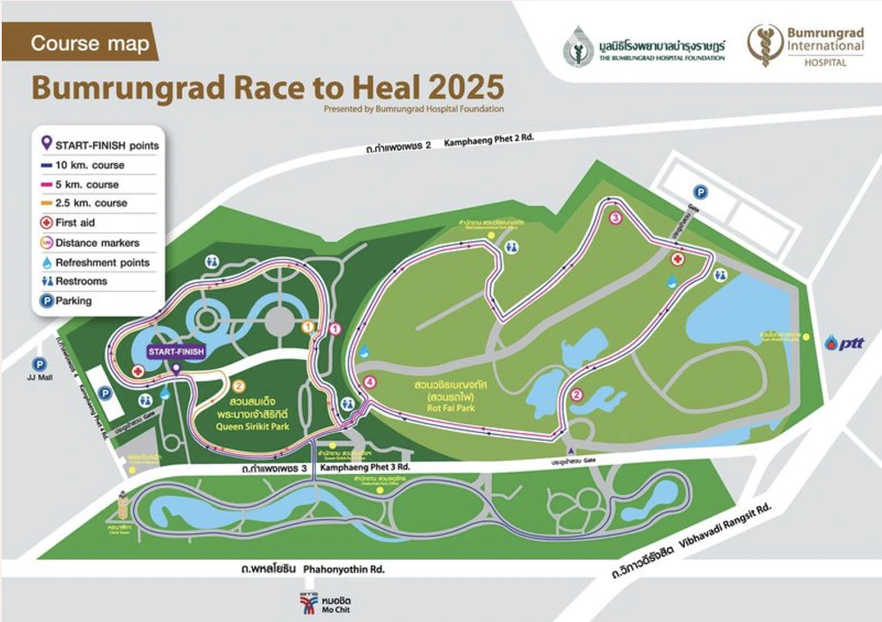

Race 01 · 10K finisher
Race to
Heal.
10KM
Official record
The result.
Race day setup
On the day.
Chatuchak Park,
Bangkok
Open in Google Maps
Adidas
Supernova Solution
Daily trainer · race-day pair
- Gun time
- 1:10:32
- Chip time
- 1:10:08
- Category
- Mixed Open
Verified finish
Official proof.
The timing record and finisher certificate from Race to Heal 2025.


What came home
The medal.
Ten kilometres complete. The first medal in this running record, and a reminder of the day the timeline began.
Race 01 / 05The route
Through the
green heart.
The 10K course linked Chatuchak, Queen Sirikit, and Rot Fai parks in one city run.
View the location